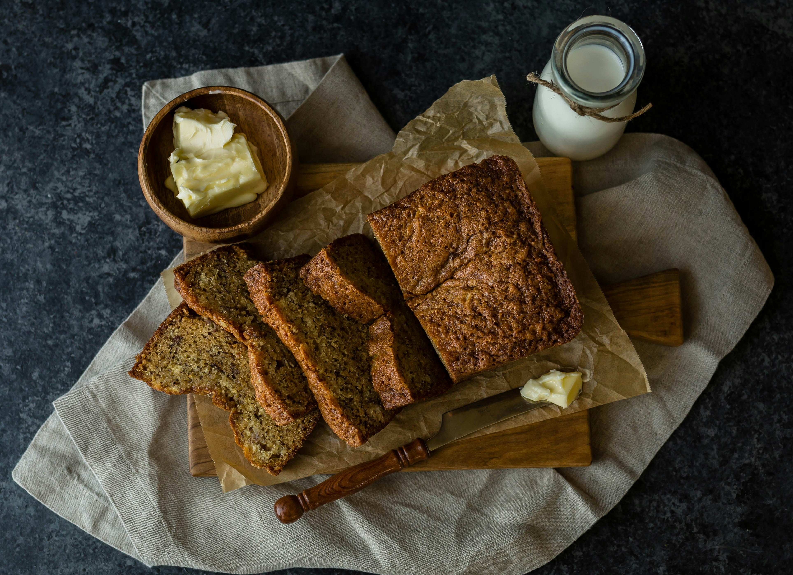

Banana Loaf
Home

Description
A banana loaf is a sweet, moist bread made from mashed ripe bananas. It is a classic home-baked treat that turns overripe fruit into a delicious snack or breakfast.
The recipe requires basic pantry staples and is very easy to mix in one bowl. You just mash the bananas, stir in the wet ingredients, fold in the dry mix, and bake it until golden brown.
Ingredients
- 3 ripe bananas, mashed
- 1/2 cup melted butter
- 3/4 cup sugar
- 1 large egg, beaten
- 1 teaspoon vanilla extract
- 1 teaspoon baking soda
- 1 1/2 cups all-purpose flour
- A pinch of salt
Steps
- Preheat your oven to 350°F (175°C) and grease a 4x8-inch loaf pan.
- Mash the ripe bananas in a large bowl with a fork until smooth.
- Mix the melted butter into the mashed bananas.
- Stir in the sugar, beaten egg, and vanilla extract until well blended.
- Sprinkle the baking soda and salt over the mixture and stir it in.
- Add the flour gently and mix just until combined, but do not overmix.
- Pour the batter into your prepared loaf pan.
- Bake for 50 to 60 minutes until a toothpick inserted into the center comes out clean.